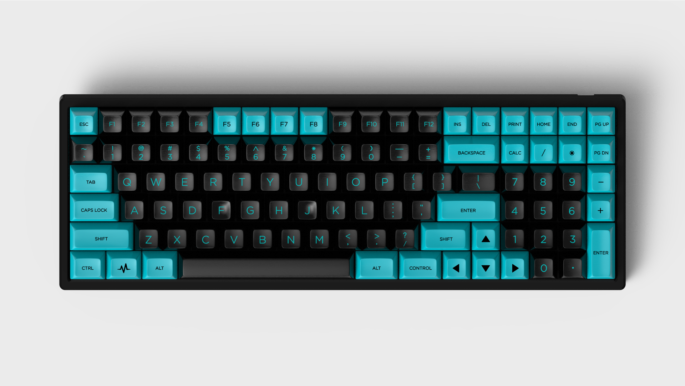
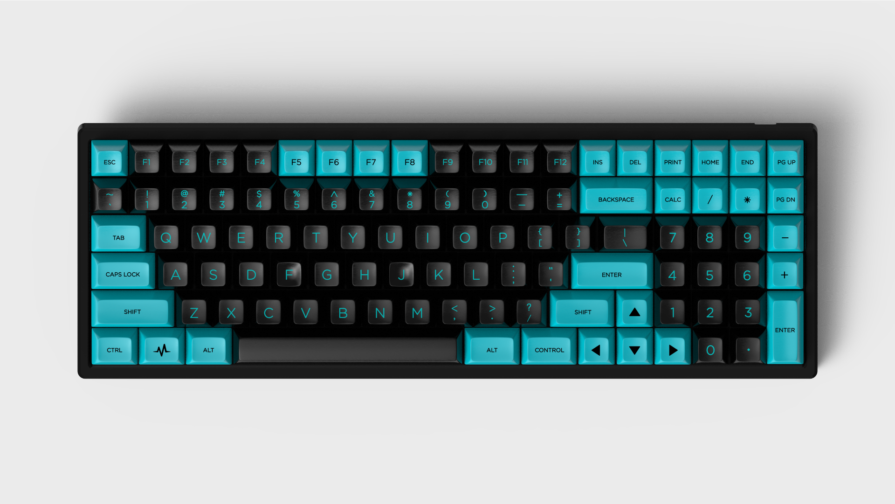

I never knew keyboards existed like this before. They come in all sorts of sizes, profiles, switches, layouts, and all sorts of keycap colorways with different themes that just drew me in. My goal is just to bring just a little bit of knowledge on the hobby.
Sizes
Full Size

You know these. They look like every other keyboard you are used to seeing. But what if you don't need all those keys or need to save precious space on your desk?
TKL

Also known as Ten Keyless. These are for those who don't find themselves reaching for the ten number keys and are perfectly fine with reaching the ones just above their fingertips.
65%

Now we are getting closer to what your laptop might look like. You are left with the Alphas, the Modifiers (Shift, Enter, Control, etc..), and your arrow keys. Not bad. Small and pretty efficient. But, what if you don't like reaching for your arrow keys when you need them or just don't used them that much because you are comfortable navigating otherwise?
60%

Well then this is the board for you! I personally like this layout the most. It is everything the 65% is but minus the arrow keys. How often do you use those anyway. Another bonus to this layout is that it is arguably the most asthetically pleasing.
40%

Where did all the numbers go?! How would you be able to feasibly use this! The answer is function layers. With a simple press of the "Fn" key, you have instant access to a whole slew of options. For instance, "Fn" + "q" can be the number "1". It is really not too difficult once you get used to the layout.
Keycap Profiles
There are more and more coming out each year but the most popular are SA and Cherry.

SA
These are made by Signature Plastics and is known for being a higher profile with sculpted keycaps.
Cherry
This is a lower profile than SA and is made in Germany. Many prefer to type on GMK vs. SA.
Switches

Linear
Straight up and down smooth action
Clicky
You know these by their ever so satisfying sound. Not recommended if you have a roommate because they will hate you :)
Tactile
My personal favorite and I think for most keyboardists. These provide that nice "bump" when the key actualizes.
Layouts
There are two main layouts and one interesting one that I will be discussing, WinKeyless, HHKB, and Ergo.
Winkeyless
This removes the "Windows" key from the keyboard giving the board a unique look. Many don't use this key and find it is unnecessary.
HHKB

HHKB is a brand of keyboard that has created what are called blockers on the bottom row of the keyboard. It brings in two keys close to the space bar and in doing so creates a nice look. With this layout, the CapsLock button (Possibly the most useless key?) is replaced with a "Control" button. No more awkward pinky movement to copy and paste something.
Ergo

Wrists hurt? Not anymore!
Keycaps!
If you really want to customize your keyboard then you got to throw some sweet caps on them. One would think they can just purchase some of these off of Amazon, but that would be very wrong. A keycap set needs to go through an interest check via online websites such as geekhack.com, then go to a group buy where you put down the payment (roughly $150 - $200), and if it hits the number of orders to produce you are looking at a 4 month wait for GMK sets and about 7 months for a SA set.
Look at all these dope keycap sets!


 
